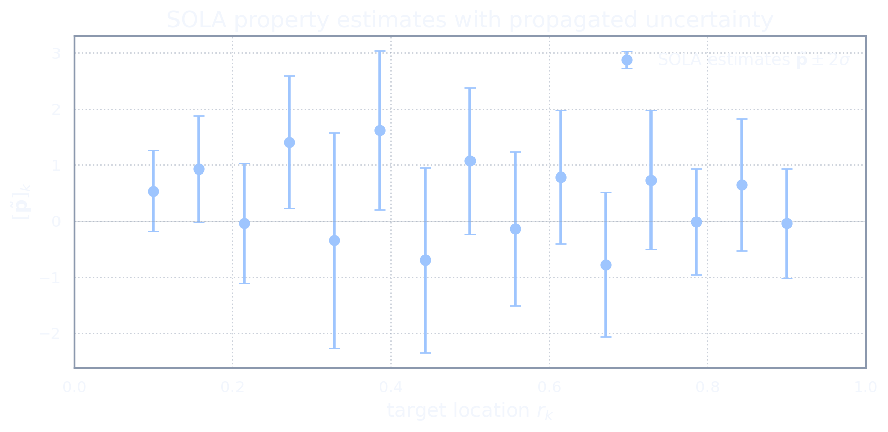

Data Are Not Exact
The noisy data model
So far, the data have been treated as exact: \(\mathbf d = G(\bar m).\) This was useful while building the basic SOLA idea. It allowed us to focus on the algebra of kernels without worrying about measurement uncertainty.
But real data are not exact. The observed data are better written as \[\widetilde{\mathbf d} = G(\bar m)+\boldsymbol\eta,\] where \(\bar m\in\M\) is the unknown true model and \(\boldsymbol\eta\in\D\) is observational noise.
In the standard Gaussian version, we assume \[\boldsymbol\eta\sim \mathcal{N}(\mathbf 0,\mathbf C_D),\] where \(\mathbf C_D\in\mathbb R^{N_d\times N_d}\) is the data-noise covariance matrix.
Thus the observed data vector is \[\widetilde{\mathbf d} \in\mathbb R^{N_d},\] with \[[\widetilde{\mathbf d}]_i = [G(\bar m)]_i+\eta_i.\]
In integral form, \[[\widetilde{\mathbf d}]_i = \int_\Omega K_i(r)\bar m(r)\dd r+\eta_i, \qquad i=1,\dots,N_d.\]
The covariance matrix \(\mathbf C_D\) tells us how uncertain the data are. If \(\mathbf C_D=\sigma_D^2\mathbf I,\) then the data errors are independent and have common variance \(\sigma_D^2\). More generally, the off-diagonal entries of \(\mathbf C_D\) encode correlations between different data errors.
The kernels tell us what the experiment tries to see. The covariance tells us how clearly it sees it.
This changes the SOLA problem. We no longer only care about constructing a resolving kernel close to the target. We also care about how much noise the chosen data combination will amplify.
Noise amplification
Suppose we choose weights \(\mathbf x=(x_1,\dots,x_{N_d})^\top.\) The corresponding SOLA-style data combination is \(\sum_{i=1}^{N_d}x_i[\widetilde{\mathbf d}]_i.\) Substituting the noisy data model gives \[\sum_{i=1}^{N_d}x_i[\widetilde{\mathbf d}]_i = \sum_{i=1}^{N_d}x_i[G(\bar m)]_i + \sum_{i=1}^{N_d}x_i\eta_i.\]
The first term is the signal part: \[\sum_{i=1}^{N_d}x_i[G(\bar m)]_i = \int_\Omega R(r)\bar m(r)\dd r,\] where \[R(r) = \sum_{i=1}^{N_d}x_iK_i(r).\] The second term is the noise part: \(\sum_{i=1}^{N_d}x_i\eta_i.\)
So the same weights \(\mathbf x\) that build the resolving kernel also combine the noise.
This is the trade-off. If we choose aggressive weights, we may obtain a sharper resolving kernel, but those same weights may amplify the observational errors.
To see this explicitly, consider the scalar noise contribution \[\epsilon_{\mathbf x} = \sum_{i=1}^{N_d}x_i\eta_i.\] In vector notation, \(\epsilon_{\mathbf x} = \mathbf x^\top\boldsymbol\eta.\) Since \(\boldsymbol\eta\sim \mathcal{N}(\mathbf 0,\mathbf C_D),\) we have \(\epsilon_{\mathbf x}\sim \mathcal{N}(0,\mathbf x^\top\mathbf C_D\mathbf x).\) Thus the variance of the weighted noise is \[\operatorname{Var}(\epsilon_{\mathbf x}) = \mathbf x^\top\mathbf C_D\mathbf x.\]
A resolving kernel can be beautifully localized but numerically dangerous if producing it requires large or unstable weights.
Sharper resolution is not free. The weights that sharpen the resolving kernel may also turn quiet data noise into loud property noise.
For multiple properties, the weights are collected into a finite matrix \(\mathbf X:\D\to\Pspace.\) The SOLA estimate is \(\widetilde{\mathbf p} = \mathbf X\widetilde{\mathbf d}.\) Using the noisy data model, \[\widetilde{\mathbf p} = \mathbf XG(\bar m)+\mathbf X\boldsymbol\eta.\] The signal part is \(\mathbf XG(\bar m)=\mathcal{A}(\bar m),\) where \(\mathcal{A}:=\mathbf XG:\M\to\Pspace\) is the approximate property map. The noise part is \(\mathbf X\boldsymbol\eta.\)
Since \(\boldsymbol\eta\sim \mathcal{N}(\mathbf 0,\mathbf C_D)\), the propagated property noise has covariance \[\mathbf C_P = \mathbf X\mathbf C_D\mathbf X^*.\]
This formula is simple because the SOLA map is linear. That is one of the great conveniences of the method.
The resolution-noise trade-off
We now have two competing desires.
First, we want the approximate property map \(\mathcal{A}=\mathbf XG\) to be close to the target property map \(\Tau.\) This is the resolution desire: \(\mathbf XG\approx \Tau.\)
Second, we want the propagated noise \(\mathbf X\boldsymbol\eta\) to be small. Since its covariance is \(\mathbf C_P=\mathbf X\mathbf C_D\mathbf X^*,\) we need some scalar measure of the size of this covariance. A common choice is the trace: \(\Tr(\mathbf X\mathbf C_D\mathbf X^*).\) This is the total propagated variance across the property components.
So noisy SOLA balances: \[\text{small resolving-target mismatch}\] against \[\text{small propagated data noise}.\]
SOLA tunes two dials at once: one sharpens the station, the other suppresses static.
If we care only about matching the target kernels, we may choose weights that are unstable. If we care only about suppressing noise, we may choose weights that produce very smooth, uninteresting resolving kernels. SOLA lives between these extremes. Obviously, we may also choose to change the target kernels themselves and look for different properties altogether which have a better chance of being well reproduced by the data.
The central compromise is: \[\text{make }\mathbf XG\text{ close to }\Tau, \quad \text{but do not let }\mathbf X\mathbf C_D\mathbf X^*\text{ become too large}.\]
Noise changes the SOLA problem from pure kernel approximation into a resolution-noise trade-off.
Noise-Aware SOLA
The noise-aware objective
We now write the noisy SOLA problem as an optimization problem.
The noiseless unconstrained objective was \(\left\| \Tau-\mathbf XG \right\|_{\HS}^2.\) This term measures how far the resolving kernels are from the target kernels.
To include data noise, we add the propagated variance term \(\Tr(\mathbf X\mathbf C_D\mathbf X^*).\) Thus the noise-aware SOLA objective is \[J(\mathbf X) = \left\| \Tau-\mathbf XG \right\|_{\HS}^2 + \Tr(\mathbf X\mathbf C_D\mathbf X^*).\]
The first term rewards resolution. The second term penalizes noise amplification.
The two terms in \(J(\mathbf X)\) have different meanings and, in general, different units. The resolution misfit \(\|\Tau-\mathbf XG\|_{\HS}^2\) measures kernel mismatch in the model-space norm, while the noise term \(\Tr(\mathbf X\mathbf C_D\mathbf X^*)\) measures variance in property-space units. Adding them without an explicit trade-off parameter is not innocent; it implicitly fixes a relative scale. Some presentations introduce an explicit parameter \(\lambda\): \[J_\lambda(\mathbf X) = \|\Tau-\mathbf XG\|_{\HS}^2 + \lambda\,\Tr(\mathbf X\mathbf C_D\mathbf X^*),\] which makes the resolution-noise dial visible. In the simplified form used here, the relative scale is absorbed into \(\mathbf C_D\) and the chosen norms. This is a legitimate convention, but it should not be read as canonical. One can always reintroduce \(\lambda\) if an explicit resolution-noise dial is desired.
The minimizer of \(J(\mathbf X)\) is the unconstrained noise-aware SOLA operator.
Let us derive its normal equation. Perturb \(\mathbf X\) by \(\mathbf H\). The first variation of the misfit term is \[-2 ( (\Tau-\mathbf XG)G^*, \mathbf H )_{\HS}.\] The first variation of the variance term is \[2 ( \mathbf X\mathbf C_D, \mathbf H )_{\HS}.\] Therefore stationarity gives \[-(\Tau-\mathbf XG)G^*+\mathbf X\mathbf C_D=0.\] Equivalently, \[(\Tau-\mathbf XG)G^* = \mathbf X\mathbf C_D.\] Rearranging, \[\Tau G^* = \mathbf XGG^*+\mathbf X\mathbf C_D.\] Hence \[\Tau G^* = \mathbf X(GG^*+\mathbf C_D).\]
Define the finite-dimensional data-space matrix \[\mathbf M := GG^*+\mathbf C_D.\] If \(\mathbf C_D\) is positive definite, then \(\mathbf M\) is invertible. The unconstrained noise-aware solution is then \[\mathbf X_0 = \Tau G^*\mathbf M^{-1}.\]
Compare this with the noiseless unconstrained solution: \(\mathbf X_0^{\mathrm{noiseless}} = \Tau G^*(GG^*)^{-1}.\) Noise has replaced \(GG^*\) by \(\mathbf M=GG^*+\mathbf C_D.\)
The covariance \(\mathbf C_D\) acts like a brake. Directions in data space with large noise become less attractive to the SOLA weights.
The constrained noisy problem
We now add the resolving constraints. As in the previous act, we may have several test models \(q_1,\dots,q_L\in\M\) with data responses collected in \(\mathbf V = \begin{pmatrix} \mathbf v_1 & \cdots & \mathbf v_L \end{pmatrix}\) and desired property responses collected in \(\mathbf W = \begin{pmatrix} \mathbf w_1 & \cdots & \mathbf w_L \end{pmatrix}.\) The constraint is \(\mathbf X\mathbf V=\mathbf W.\)
For averages with a single calibration, this reduces to the unimodularity condition \(\mathbf X\mathbf v=\mathbf w.\) But the general form allows any number of independent calibration conditions.
The constrained noisy SOLA problem is \[\mathbf X_c = \argmin_{\mathbf X} \left\{ \left\| \Tau-\mathbf XG \right\|_{\HS}^2 + \Tr(\mathbf X\mathbf C_D\mathbf X^*) \right\} \quad \text{subject to} \quad \mathbf X\mathbf V=\mathbf W.\]
This is the full basic SOLA problem in these notes. It contains: \[\begin{array}{lll} \text{target matching} &:& \left\|\Tau-\mathbf XG\right\|_{\HS}^2,\\[0.3em] \text{noise control} &:& \Tr(\mathbf X\mathbf C_D\mathbf X^*),\\[0.3em] \text{interpretive calibration} &:& \mathbf X\mathbf V=\mathbf W. \end{array}\]
Noise-aware constrained SOLA asks for the best resolving kernels that are calibrated correctly and do not amplify data noise too much.
Closed-form solution
The constrained problem can be solved by the same Lagrange multiplier logic as before. The only change is that \(GG^*\) is replaced by \(\mathbf M=GG^*+\mathbf C_D.\)
Define \(\mathbf M := GG^*+\mathbf C_D,\) \(\mathbf U := \mathbf M^{-1}\mathbf V,\) and \(\boldsymbol\Gamma := \mathbf V^*\mathbf U = \mathbf V^*\mathbf M^{-1}\mathbf V.\) Assuming \(\mathbf M\) is positive definite and \(\boldsymbol\Gamma\) is invertible, the constrained noise-aware SOLA solution is \[\mathbf X_c = \Tau G^*\mathbf M^{-1} - (\Tau G^*\mathbf U-\mathbf W)\boldsymbol\Gamma^{-1}\mathbf U^*.\]
This is the noisy analogue of the general constrained correction from the previous act. The first term \(\mathbf X_0 = \Tau G^*\mathbf M^{-1}\) is the unconstrained noise-aware solution. The second term is the finite-rank correction needed to enforce \(\mathbf X_c\mathbf V=\mathbf W.\)
To verify, apply \(\mathbf X_c\) to \(\mathbf V\): \[\mathbf X_c\mathbf V = \Tau G^*\mathbf M^{-1}\mathbf V - (\Tau G^*\mathbf U-\mathbf W)\boldsymbol\Gamma^{-1}\mathbf U^*\mathbf V.\] Since \(\mathbf U^*\mathbf V = \mathbf V^*\mathbf M^{-1}\mathbf V = \boldsymbol\Gamma,\) we obtain \[\mathbf X_c\mathbf V = \Tau G^*\mathbf U - (\Tau G^*\mathbf U-\mathbf W) = \mathbf W.\] So the constraints are satisfied exactly.
The single-constraint formula drops out as the special case \(\mathbf V=\mathbf v,\;\mathbf W=\mathbf w,\;\boldsymbol\Gamma=\beta,\;\mathbf U=\mathbf u,\) giving \[\mathbf X_c = \Tau G^*\mathbf M^{-1} - \frac{\Tau G^*(\mathbf u)-\mathbf w}{\beta}\mathbf u^*.\]
The matrix \(\mathbf M=GG^*+\mathbf C_D\) combines the geometry of the sensitivity kernels with the geometry of the data noise. The term \(GG^*\) knows which data combinations are supported by the model-space kernels. The term \(\mathbf C_D\) knows which data combinations are noisy.
At the kernel level, the \(k\)th resolving kernel is still \[R_k(r) = \sum_{i=1}^{N_d} [\mathbf X_c]_{ki}K_i(r).\] The difference is that the weights now know about noise. A kernel that could be obtained only by using extremely noisy data combinations will be discouraged by the variance term.
Noise-aware SOLA does not merely ask, “which resolving kernel is closest to the target?” It asks, “which calibrated resolving kernel is closest to the target without paying too much in noise?”
The usual propagated covariance
Once the SOLA matrix \(\mathbf X\) has been chosen, the usual uncertainty calculation is straightforward.
The observed data are \(\widetilde{\mathbf d} = G(\bar m)+\boldsymbol\eta,\; \boldsymbol\eta\sim \mathcal{N}(\mathbf 0,\mathbf C_D).\) The SOLA estimate is \(\widetilde{\mathbf p} = \mathbf X\widetilde{\mathbf d}.\) Substituting the data model, \[\widetilde{\mathbf p} = \mathbf XG(\bar m) + \mathbf X\boldsymbol\eta.\] The random part is \(\mathbf X\boldsymbol\eta.\) Since \(\boldsymbol\eta\) has covariance \(\mathbf C_D\), the propagated covariance is \[\mathbf C_P = \mathbf X\mathbf C_D\mathbf X^*.\]
In components, the covariance between the \(k\)th and \(\ell\)th SOLA outputs is \[[\mathbf C_P]_{k\ell} = \sum_{i=1}^{N_d} \sum_{j=1}^{N_d} [\mathbf X]_{ki} [\mathbf C_D]_{ij} [\mathbf X^*]_{j\ell}.\] If the data and property spaces use standard Euclidean inner products, then \(\mathbf X^*=\mathbf X^\top,\) and this becomes \[[\mathbf C_P]_{k\ell} = \sum_{i=1}^{N_d} \sum_{j=1}^{N_d} [\mathbf X]_{ki} [\mathbf C_D]_{ij} [\mathbf X]_{\ell j}.\]
The diagonal entries \([\mathbf C_P]_{kk}\) are the propagated variances of the individual SOLA outputs. A common display is therefore \[[\widetilde{\mathbf p}]_k \pm 2\sqrt{[\mathbf C_P]_{kk}},\] which shows the estimate together with a nominal two-standard-deviation band.

This covariance propagation is mathematically correct. If \(\boldsymbol\eta\) is Gaussian with covariance \(\mathbf C_D\), then \(\mathbf X\boldsymbol\eta\) is Gaussian with covariance \(\mathbf X\mathbf C_D\mathbf X^*\).
But we should be precise about what this means. It describes how observational noise moves through the chosen SOLA map. It does not yet tell us everything one might want to know about the true target property \(\Tau(\bar m).\) That harder interpretive issue comes later.
The formula \(\mathbf C_P=\mathbf X\mathbf C_D\mathbf X^*\) is mathematically correct as linear covariance propagation. The harder question is what inferential question it answers.
We now have the classical SOLA ingredients in place: target kernels, resolving kernels, calibration constraints, noise-aware optimization, and propagated covariance. The next act asks what the resulting SOLA numbers actually estimate.